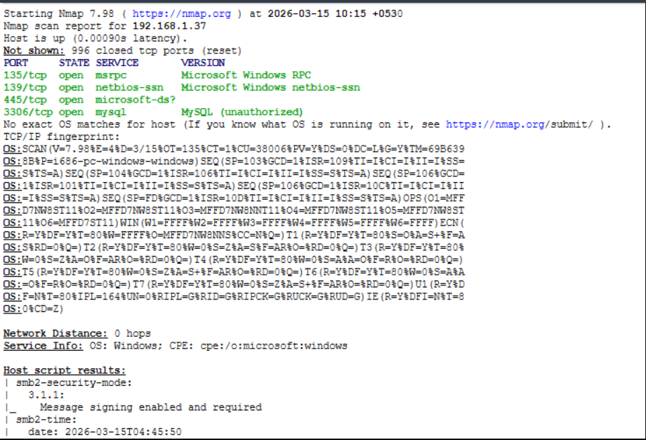
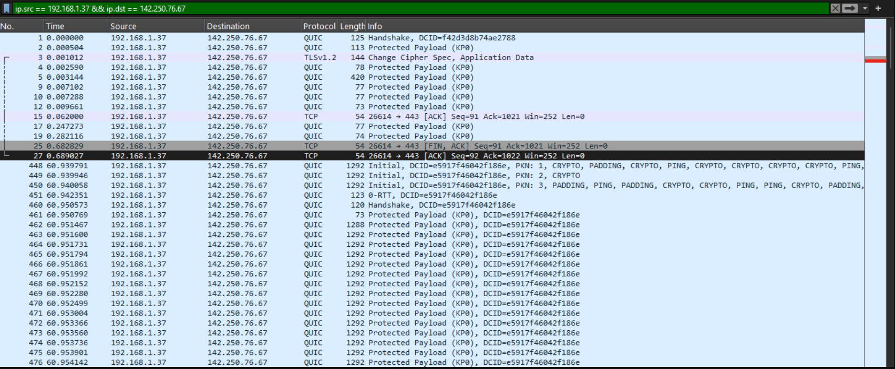
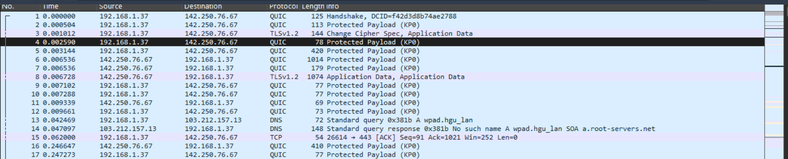
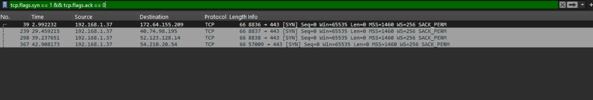
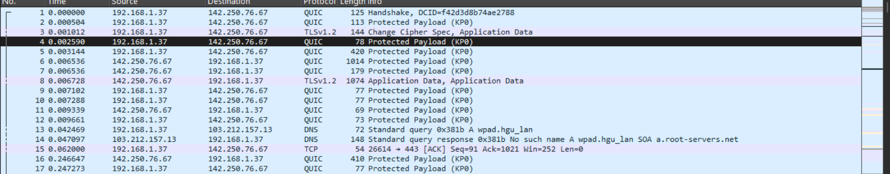

Detecting TCP SYN Port Scans.
A practical Security Operations Center lab that simulates reconnaissance with Nmap, analyzes packet captures using Wireshark, identifies scanning behavior, and documents the findings in an incident report.
$ nmap -sS -A 192.168.1.37 PORT SERVICE 135/tcp MSRPC 139/tcp NetBIOS 445/tcp SMB 3306/tcp MySQL ALERT: multiple SYN probes DETECTION: TCP SYN scan
From packet capture to incident report
This lab demonstrates the core stages of a lightweight SOC investigation.
Objective
Detect network reconnaissance and identify port-scanning behavior from captured traffic.
Tools Used
Nmap for reconnaissance, Wireshark for packet inspection, and TCP/IP networking concepts.
Environment
Local network security lab. Source system: 192.168.1.37.
Attack Simulation & Traffic Analysis
The investigation correlates the Nmap scan with packet-level evidence.
⚡ Reconnaissance Command
This command performs a TCP SYN scan with service and OS detection.
📡 Wireshark Filter
The filter isolates TCP SYN packets that have not received an ACK, helping identify scanning activity.
📊 Discovered Services
| Port | Service | Description |
|---|---|---|
| 135 | MSRPC | Microsoft RPC |
| 139 | NetBIOS | Network file sharing |
| 445 | SMB | Windows file sharing |
| 3306 | MySQL | Database service |
Indicators of Compromise
The collected evidence is consistent with reconnaissance activity using a TCP SYN scan.
Source IP
192.168.1.37
Activity
TCP SYN Port Scan
Detection Source
Wireshark Packet Analysis
🧠 Analyst Conclusion
Multiple SYN packets were observed against different ports without completing the TCP handshake. This behavior matches a TCP SYN scan and is characteristic of the reconnaissance phase of a cyber attack.
Packet Analysis Evidence
Visual evidence from the Mini SOC Lab investigation.





Future Improvements
Possible extensions for turning this mini lab into a larger SOC environment.
Zeek
Add network security monitoring and richer protocol logs.
Suricata
Add IDS signatures and automated security alerts.
SIEM
Forward logs and alerts into a SIEM for centralized investigation.